Example - Spring Mass System¶
This example provides a simple demonstration of SROMPy functionality. The goal
is to estimate the maximum displacement of a spring-mass
system with random stiffness using the SROM approach and compare the solution
to Monte Carlo simulation. The example covers all steps for computing a
solution using SROMs using SROMPy, including defining a random input parameter
(spring stiffness) using a SROMPy target random variable, modeling the random
input using a SROM, and propagating the uncertainty through a computational
model (spring mass numerical integrator) to a quantity of interest (max.
displacement). The full source code for this example can be found in the
SROMPy repository: /SROMPy/examples/spring_mass/run_spring_mass_1D.py

Spring-mass system
Problem Specification¶
The governing equation of motion for the system is given by
(1)¶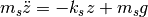
where 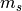 is the mass, 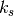 is the spring stiffness,  is the acceleration due to gravity,
is the acceleration due to gravity,  is the vertical displacement
of the mass, and 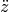 is the acceleration of the mass. The
source of uncertainty in the system will be the spring stiffness, which is
modeled as a random variable of the following form:
is the vertical displacement
of the mass, and 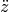 is the acceleration of the mass. The
source of uncertainty in the system will be the spring stiffness, which is
modeled as a random variable of the following form:
(2)¶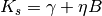
where  and
and  are shift and scale parameters,
respectively, and 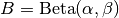 is a standard Beta
random variable with shape parameters
are shift and scale parameters,
respectively, and 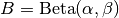 is a standard Beta
random variable with shape parameters  and
and  . Let
these parameters take the following values:
. Let
these parameters take the following values:  ,
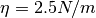, 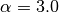, and 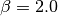. The mass
is assumed to be deterministic, 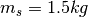, and the acceleration due
to gravity is 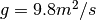.
,
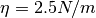, 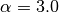, and 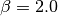. The mass
is assumed to be deterministic, 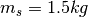, and the acceleration due
to gravity is 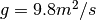.
With uncertainty in an input parameter, the resulting displacement,  , is a random variable as well. The quantity of interest in this example with be the maximum displacement over a specified time window, 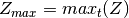. It is assumed we have access to a computational model that numerically integrates the governing equation over this time window for a given sample of the random stiffness and returns the maximum displacement. The goal of this example will be to approximate the mean,
, is a random variable as well. The quantity of interest in this example with be the maximum displacement over a specified time window, 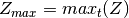. It is assumed we have access to a computational model that numerically integrates the governing equation over this time window for a given sample of the random stiffness and returns the maximum displacement. The goal of this example will be to approximate the mean, ![E[Z_{max}]](_images/math/b125a026740c3cb29d8f1b0bef027d3e0be86939.png) , and CDF, 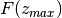, using the SROM approach with SROMPy and compare it to a Monte Carlo simulation solution.
, and CDF, 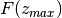, using the SROM approach with SROMPy and compare it to a Monte Carlo simulation solution.
Step 1: Define target random variable, initialize model, generate reference solution¶
Begin by importing the needed SROMPy classes as well as the SpringMassModel class that defines the spring mass model:
import numpy as np
from spring_mass_model import SpringMassModel
#import SROMPy modules
from SROMPy.postprocess import Postprocessor
from SROMPy.srom import SROM, FiniteDifference as FD, SROMSurrogate
from SROMPy.target import SampleRandomVector, BetaRandomVariable
The first step in the analysis is to define the target random variable to represent the spring stiffness 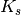 using the BetaRandomVariable class in SROMPy:
#Random variable for spring stiffness
stiffness_random_variable = BetaRandomVariable(alpha=3.,beta=2.,shift=1.,scale=2.5)
Next, the computational model of the spring-mass system is initialized:
#Specify spring-mass system and initialize model:
m = 1.5
state0 = [0., 0.]
time_step = 0.01
model = SpringMassModel(m, state0=state0, time_step=time_step)
The source code for the spring mass model can be found in the SROMPy repository as well: SROMPy/examples/spring_mass/spring_mass_model.py
A reference solution using Monte Carlo simulation is now generated for comparison later on. This is done by sampling the random spring stiffness, evaluating the model for each sample, and then using the SROMPy SampleRandomVector class to represent the Monte Carlo solution for maximum displacement:
#----------Monte Carlo------------------
#Generate stiffness input samples for Monte Carlo
num_samples = 5000
stiffness_samples = stiffness_random_variable.draw_random_sample(num_samples)
# Calculate maximum displacement samples using MC simulation.
displacement_samples = np.zeros(num_samples)
for i, stiff in enumerate(stiffness_samples):
displacement_samples[i] = model.evaluate([stiff])
# Get Monte carlo solution as a sample-based random variable:
monte_carlo_solution = SampleRandomVector(displacement_samples)
Step 2: Construct SROM for the input¶
A SROM,  is now formed to model the random stiffness input, , with SROMPy. The following code initializes the SROM class for a model size of 10 and uses the optimize function to set the optimal SROM parameters to represent the random spring stiffness:
is now formed to model the random stiffness input, , with SROMPy. The following code initializes the SROM class for a model size of 10 and uses the optimize function to set the optimal SROM parameters to represent the random spring stiffness:
#Generate SROM for random stiffness
sromsize = 10
dim = 1
input_srom = SROM(sromsize, dim)
input_srom.optimize(stiffness_random_variable)
The CDF of the resulting SROM can be compared to the original Beta random variable for spring stiffness using the SROMPy Postprocessor class:
#Compare SROM vs target stiffness distribution:
pp_input = Postprocessor(input_srom, stiffness_random_variable)
pp_input.compare_CDFs()
This produces the following plot:

Step 3: Evaluate model for each SROM sample:¶
Now output samples of maximum displacement must be generated by running the spring-mass model for each stiffness sample from the input SROM, i.e.,
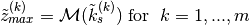
Note that this is essentially a Monte Carlo simulation step, but with far fewer model evaluations using the SROM method (10 versus 5000)
This is done with the following code:
#run model to get max disp for each SROM stiffness sample
srom_displacements = np.zeros(srom_size)
(samples, probabilities) = input_srom.get_params()
for i, stiff in enumerate(samples):
srom_displacements[i] = model.evaluate([stiff])
Here, the spring-mass model is executed for each of the 10 optimal stiffness samples found in Step 2, and the corresponding maximum displacements are stored for the next step.
Step 4: Form SROM surrogate model for output¶
Approach a) Piecewise-constant approximation¶
The simplest way to propagate uncertainty using SROMs is to form a piecewise-constant approximation that directly uses the model outputs obtained in Step 3 and the input SROM probabilities found in Step 2. This is done by constructing a new SROM for the model output (max. displacement) as follows:
# Form new SROM for the max disp. solution using samples from the model.
output_srom = SROM(srom_size, dim)
output_srom.set_params(srom_displacements, probabilities)
The mean of the output can now be estimated using the SROM and the SROMPy compute_moments function and compared to Monte Carlo as follows:
#Compare mean estimates for output:
print "Monte Carlo mean estimate: ", np.mean(displacement_samples)
print "SROM mean estimate: ", output_srom.compute_moments(1)[0][0]
The max. displacement CDF estimate using SROMs can be compared to the Monte Carlo solution using the SROMPy Postprocessor as follows:
#Compare solutions
pp_output = Postprocessor(output_srom, monte_carlo_solution)
pp_output.compare_CDFs(variablenames=[r'$Z_{max}$'])
This produces the following comparison plot:
{kind=link}
Approach b) Piecewise-linear approximation¶
Now a more accurate piecewise-linear SROM surrogate model is formed to estimate the CDF of the maximum displacement. To do so, gradients must be calculated using finite difference and provided to the SROMSurrogate class upon initialization.
The finite different gradients are calculated with the help of the FiniteDifference class (FD), requiring extra model evaluations for perturbed inputs:
#Perturbation size for finite difference
stepsize = 1e-12
samples_fd = FD.get_perturbed_samples(samples, perturb_vals=[stepsize])
# Run model to get perturbed outputs for FD calc.
perturbed_displacements = np.zeros(srom_size)
for i, stiff in enumerate(samples_fd):
perturbed_displacements[i] = model.evaluate([stiff])
gradient = FD.compute_gradient(srom_displacements, perturbed_displacements,
[step_size])
A piecewise-linear surrogate model can now be constructed and then sampled to approximate the CDF of the maximum displacement:
#Initialize piecewise-linear SROM surrogate w/ gradients:
surrogate_PWL = SROMSurrogate(input_srom, srom_displacements, gradient)
#Use the surrogate to produce max disp samples from the input stiffness samples:
output_samples = surrogate_PWL.sample(stiffness_samples)
#Represent the SROM solution as a sample-based random variable:
solution_PWL = SampleRandomVector(output_samples)
Finally, the new piece-wise linear CDF approximation is compared to the Monte Carlo solution:
#Compare SROM piecewise linear solution to Monte Carlo
pp_pwl = Postprocessor(solution_PWL, monte_carlo_solution)
pp_pwl.compare_CDFs(variablenames=[r'$Z_{max}$'])